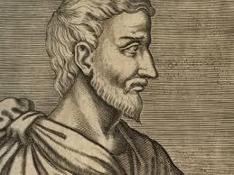

a final del segle VI a. C. va ser un filòsof i matemàtic grec.
Els seus ensenyaments polítics i religiosos eren ben coneguts a la Magna Grècia i van influir en els filosofies de Plató, Aristòtil i, a través d'eles dobles, la filosofía occidental.
